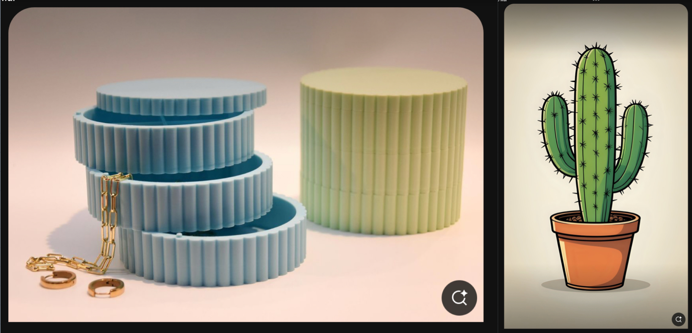
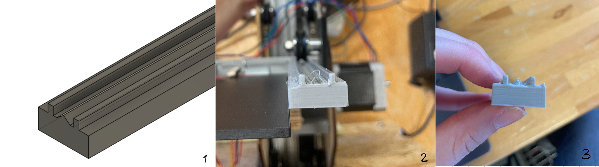
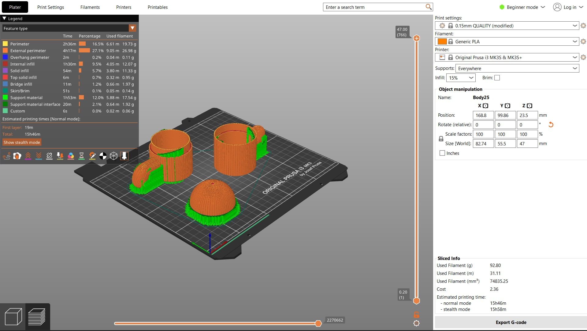

Þetta verekfni fólst í því að hanna módel fyrir 3D prentun sem ekki væri hægt að framkvæma með frádráttar framleiðslu.
Partur af verkefninu fólst í þvi að hanna og framkvæma prófanir á prentaranum til þess að ákvarða hönnunarreglur og skorður áður en módelið er prentað.
3D prentun
Ég ákvað að mig langaði að gera svona lítið tveggja hæða box fyrir skartgripi, bómullapúða og svoleiðis litla hluti. Ég fór á Pinterest til þess að leita að hugmyndum um hvernig ég vildi gera þetta. Ég leitaði undir leitar orðinu "stacked organizer". Þar fann ég myndina af geymslu hólfunum hér að neðan og þá ákvað ég að ég vildi hafa boxið mitt tveggja hæða. Áferðin á boxinu á myndini minnti mig á kaktus þannig ég ákvað að gera boxið mitt í laginu eins og kaktus. Þá fór ég aftur á pinterest og leitaði að "cactus".
Ég ákvað líka að ég vildi að ég vildi hafa hvert hólf fast á hvort annað þannig að ef maður tekur það upp fer það upp í heild en samt þannig að maður gæti opnað það. Ég ákvað að gera snúningsbita á milli hvers box sem festir þau saman, svona svipað consept og hvernig tappar eru festir á flöskur.
Einu áhyggjurnar sem ég hafði af prentuninni voru snúnings festingarnar og áferðin að utan. Við höfum unnið mikið með 3D prentarann í öðru verkefni og það sem veldur mér mestum áhyggjum eftir það verkefni er að snúa hlutnum "rétt" fyrir prentið til þess að ná smáatriðunum rétt. Myndin hér að neðan er af rennu sem teiknuð var fyrir annað verkefni. Myndin lengst til vinstri (1) sýnir teikninguna, myndin fyrir miðju (2) sýnir rennuna þegar hún var prentuð á hlið og myndin lengst til hægri sýnir rennuna þegar hún var prentuð á hvolfi. Eins og myndin sýnir náði prentarinn ekki fram þeim smáatriðum sem óskað var eftir, þ.e.a.s. miðjan á rennuni sem á að standa upp gerir það ekki, þegar hún var prentuð á hlið. Hinsvegar þegar rennan snéri niður kom hún vel út. Því er mikilvægt að box-in standi í prentaraum svo rákirnar séu lóðrétt á prent-hausinn.
Annað áhyggjuefni var að ná snúnings festingunni rétt. Fyrir þann hluta ákvað ég að prenta prufu þar sem ég hef ekki prentað neitt svipað áður. Þar sem boxin þurfa að standa upprétt í prentinu þarf festingin að ná að prentast upprétt líka. Ég vil hafa festinguna sem minnsta svo ég gerði snúninglínurnar aðeins 2mm á breidd og 2mm á hæð fyrir prufuna til þess að sjá hversu litla ég kemst upp með að hafa þær. Hér til hliðar má sjá festinguna sem ég prufaði að prenta. Þar sem hún prentaðist nákvæmlega eins og ég hafði ýmindað mér sá ég enga ástæðu til þess að gera fleiri prufur svo ég fór að hefjast handa við hönnun á prentinu.
Ég teiknaði hlutinn í Fusion og hér að neðan má sjá loka teikninguna af hlutnum. Boxin eru sitthvorumegin á þeim eru svo greinar kaktusins sem ég hafði hugsað sem handföng til þess að einfalda snúning hans, til þess að gera hann þæginlegri til þess að opna. Handföngin eru hol að innan til þess að létta hlutinn. Þar sem veggir boxins eru þunnir er hvert box ekki þungt og of þungt handfang gæti sent boxið á hliðina. Þar sem þau þurfa að vera hol að innan þarf að framleiða þennan hlut með 3D prentun. Einnig er lokið á toppnum holt að innan en það er líka til þess að létta á hlutnum og eyða ekki óþarfa efni.

Þegar ég var orðin sátt við teikninguna exportaði ég hana sem 3mf file og færði hana yfir í Prusa. Eins og ég talaði um áðan var mikilvægt að boxin myndu standa og því prufaði ég bara tvær hliðar. Þá lét ég bara slicer-inn um að ákveða hvernig þetta myndi snúa, var bara að miða við hvað notaði minnsta efnið.
Hönnunarskjölin eins og áður má finna inná "Thingiverse" síðunni minni. Hér til hliðar má svo sjá loka afurðina.
3D skönnun
Ég ákvað svo að skanna nocco dósina mína þar sem hún var við hliðiná mér þegar kom að þessum hluta verkefnisins. Ég sótti "Scaniverse" forritið á símann minn og skannaði þegar ég gekk hringinn í kringum dósina. Þar næst lét ég forritið um að búa til þessa fallegu "Skönnun". Hér má svo sjá video af skönnunni.